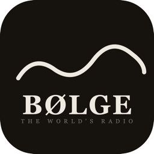
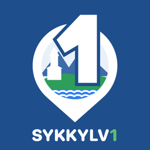
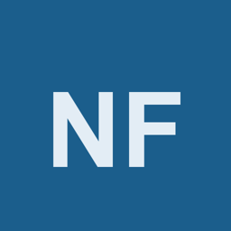

Apputvikler · Sykkylven
Konstantin Krane
Jeg lager apper som løser praktiske problemer i hverdagen.
Fra idé og design til programmering, testing og publisering — hele veien selv. Under ligger prosjektene mine, med ærlig status på hvert enkelt.

Bølge I App StoreRadio du kan lese. Direkteteksting av nyhets- og talesendinger, rett på telefonen og uten at lyd forlater den. Over tusen stasjoner fra 65 land.

Sykkylv1 Lukket testingFerjetider, driftsmeldinger, tømmekalender, vær og kulturprogram for Sykkylven — samlet på ett sted. For iPhone og Android.

NorskFlow Under utviklingNorsk for voksne, fra nybegynner til viderekomne. Leksjoner, dialoger og repetisjon bygget på situasjoner fra virkeligheten: jobb, lege, NAV, butikk.
Lille Elg Under utviklingNorsk for barn som ennå ikke leser eller skriver. Barnet sier navnet sitt i stedet for å skrive det, og en animert elg viser veien gjennom ord og oppgaver.
Trådløs styring av motoriserte hvilestoler over Bluetooth Low Energy, med lagrede sittestillinger, kalibrering og nødstopp.